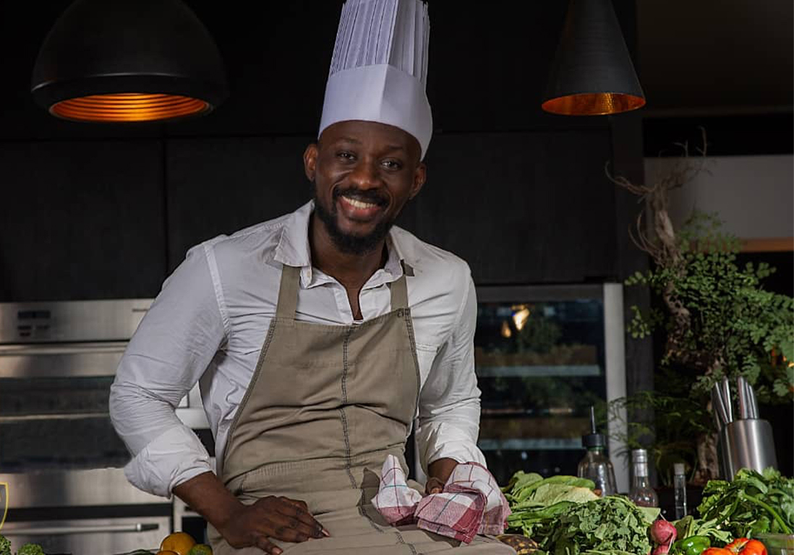

Chef Pierre Dénis
Spécialiste de la pâtisserie Guinéenne, Chef Pierre nous régale avec des desserts raffinés et des créations gourmandes.

Chef Boubzy Legrand
Expert en cuisson à basse température, Chef Boubzy propose une cuisine respectueuse des saveurs et des textures.

Chef Don Rifa
Maître de la cuisine fusion, Chef Don combine les influences asiatiques et méditerranéennes pour des plats originaux.